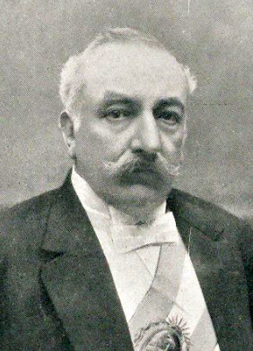

Sancionan el voto secreto y obligatorio: la Argentina entierra el fraude a la vista de todos
El Congreso ha sancionado la ley impulsada por el presidente Sáenz Peña que establece el voto secreto, universal y obligatorio sobre el padrón militar. Se pretende así enterrar el voto cantado y el fraude a la vista de todos que por décadas viciaron los comicios. «Quiera el pueblo votar», ha dicho el presidente.

El Congreso de la Nación ha sancionado esta madrugada la ley que reforma de raíz el modo en que los argentinos eligen a sus gobernantes. Impulsada por el presidente don Roque Sáenz Peña, la nueva norma, que llevará el número 8871, establece el sufragio universal, secreto y obligatorio para los varones ciudadanos, sobre la base del padrón militar y bajo el resguardo del cuarto oscuro. Con ella se pretende dar sepultura a una vieja vergüenza nacional: el voto cantado en voz alta ante el caudillo, la libreta ajena, la boleta cambiada, el comicio ganado a fuerza de matones y de muertos que votan.
La reforma descansa en tres pilares que se sostienen unos a otros. El voto será secreto, emitido a solas en un recinto cerrado, de suerte que nadie pueda ya vigilar ni comprar el sufragio ajeno con la papeleta a la vista. Será obligatorio, porque el ciudadano que se abstiene deja el campo libre a la maniobra, y la ley quiere arrancarlo de su indiferencia. Y se apoyará en el padrón militar, ajeno a los amaños de los comités, para que las listas de votantes no las confeccione ya la mano interesada de los gobiernos. Además, la minoría tendrá representación asegurada, que no todo ha de llevárselo el que gana.
No ha sido dádiva graciosa, sino fruto de un largo forcejeo. Durante más de treinta años, un régimen de notables se ha perpetuado en el poder mediante elecciones que eran pura formalidad, mientras crecía por debajo un país nuevo, henchido de inmigrantes y de hijos de inmigrantes que pagaban impuestos y no elegían nada. Contra ese orden se alzó en armas más de una vez la Unión Cívica Radical, que hizo de la abstención su bandera, negándose a competir en mesas de tahúres. El propio presidente, hombre del régimen, ha comprendido que la olla hierve y que más vale abrir la válvula del voto limpio que aguardar el estallido.
«Quiera el pueblo votar», ha dicho el presidente, y en esas tres palabras se cifra su apuesta y también su incógnita, porque nadie sabe aún si el pueblo, tanto tiempo apartado, acudirá a las urnas o desdeñará el convite. En los cafés y en los comités la sanción se comenta con una mezcla de entusiasmo y de recelo. Los del viejo orden confían en que su influencia sobrevivirá al cuarto oscuro; mas en los barrios se murmura otra cosa, y no falta quien asegure que los comités de cierto caudillo radical, un tal Yrigoyen, esperan agazapados su hora, seguros de que la urna limpia les dará al fin lo que las armas no les dieron.
¿Qué augura esta ley para la república? El diario no se hace ilusiones de que un texto legal baste para mudar de un día para otro las costumbres de un país; el fraude tiene astucias viejas y sabrá buscar rendijas. Pero algo grave se ha decidido esta madrugada: por primera vez el voto del último ciudadano valdrá tanto como el del primero, y a solas con su conciencia. Quien abre esa puerta no siempre gobierna después la casa. Los notables que hoy la abren para salvar el orden acaso descubran mañana que han llamado a gobernar a otros. Sea como fuere, el país que vote ya no será el que callaba.